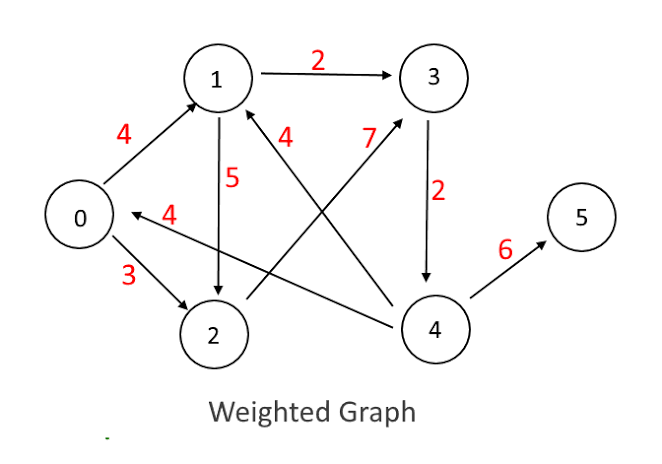
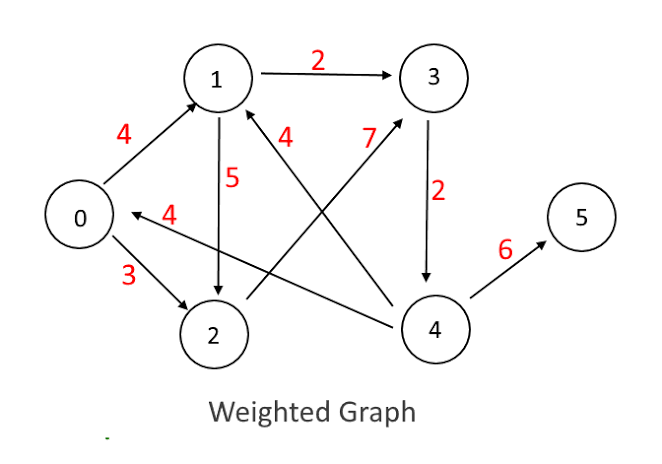
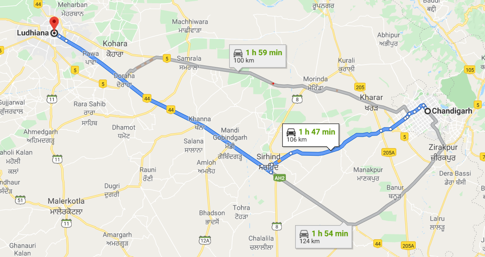
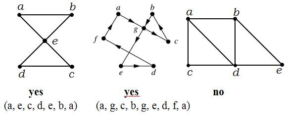
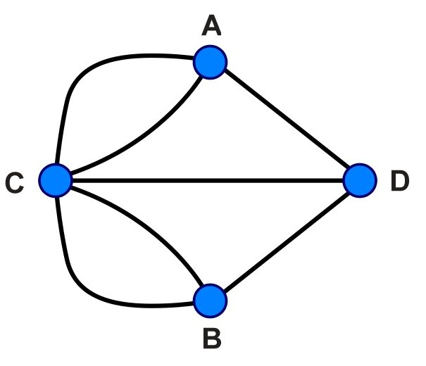

Weighted Graph?
A graph having weights i.e. a certain value assigned to the edges.


Weighted Graph?
A graph having weights i.e. a certain value assigned to the edges.

Shortest Path
It is the path that one can take to travel the minimum distance in order to reach a particular destination.

Shortest Path In A Weighted Graph
In technical terms, it can be said as the shortest path that we can traverse between any two vertices starting from one and leading to other.
Shortest path in a weighted Graph(Hands On Implementation)

Step 1: Consider two sets P and T. P contains those points which have been used while the T contains unused points/value.
Step 2: Let the distance between adjacents of vertex 0 be
L(7)=weight=8;
L(1)=weight=4;// Also tells the distance between vertex 0 and vertex 1.
while others
L(2)=L(3)=L(4)=L(5)=L(6)=L(8)= infinite;
Step 3: Find the Element having minimum value among all and put it in the set P.
Now here P={0,1} T={2,3,4,5,6,7,8}
Step 4: Suppose we want to find shortest path from 0 to 4. So we need to find the element having minimum value
put it in P. Repeat until 4 comes in the set P.

Step 5: *IMPORTANT*FORMULA*
L1(x)=min[L(x),L(prev)+W(x,prev)], where x belongs to T and previous belong to P.
SO Here L1(2)=min[L(2),L(1)+8]=min[infinite,4+8]=12
Similarly,
L1(3)=min[infinite,4+infinite]=infinite
L1(4)=min[infinite,4+infinite]=infinite
L1(5)=min[infinite,4+infinite]=infinite
L1(6)=min[infinite,4+infinite]=infinite
L1(7)=min[8,4+11]=8
L1(8)=min[infinite,4+infinite]=infinite
Since L1(7) is minimum amongst all L1 so we put 7 in P i.e.
P={0,1,7} AND T={2,3,4,5,6,8}

Step 6: Find L2
L2(x)=min[L1(x),L1(prev)+W(x,prev)], where x belongs to T and previous belong to P.
SO Here L2(2)=min[L(2),L1(7)+infinite]=min[12,8+infinite]=12
Similarly,
L2(3)=min[infinite,8+infinite]=infinite
L2(4)=min[infinite,8+infinite]=infinite
L2(5)=min[infinite,8+infinite]=infinite
L2(6)=min[infinite,8+1]=9
L2(8)=min[infinite,8+7]=15
Since L2(6) is minimum amongst all L2 so we put 6 in P i.e.
P={0,1,7,6} AND T={2,3,4,5,8}

Step 7: Find L3
L3(x)=min[L2(x),L2(prev)+W(x,prev)], where x belongs to T and previous belong to P.
SO Here L3(2)=min[L2(2),L2(6)+W(2,6)]=min[12,9+infinite]=12
Similarly,
L3(3)=min[infinite,9+infinite]=infinite
L3(4)=min[infinite,9+infinite]=infinite
L3(5)=min[infinite,9+2]=11
L3(8)=min[15,9+6]=15
Since L3(5) is minimum amongst all L3 so we put 5 in P i.e.
P={0,1,7,6,5} AND T={2,3,4,8}

Step 8: Find L4
L4(x)=min[L3(x),L3(prev)+W(x,prev)], where x belongs to T and previous belong to P.
SO Here L4(2)=min[L3(2),L3(5)+W(2,5)]=min[12,11+4]=12
Similarly,
L4(3)=min[infinite,11+14]=25
L4(4)=min[infinite,11+10]=21
L4(8)=min[15,11+infinite]=15
Since L4(2) is minimum amongst all L4 so we put 2 in P i.e.
P={0,1,7,6,5,2} AND T={3,4,8}
Step 9: Find L5
L5(x)=min[L4(x),L4(prev)+W(x,prev)], where x belongs to T and previous belong to P.
SO Here L5(3)=min[L4(3),L4(2)+W(3,2)]=min[25,12+7]=19
Similarly,
L5(4)=min[21,12+infinite]=21
L5(8)=min[15,12+2]=14
Since L5(8) is minimum amongst all L5 so we put 8 in P i.e.
P={0,1,7,6,5,2,8} AND T={3,4}
Step 10: Find L6
L6(x)=min[L5(x),L5(prev)+W(x,prev)], where x belongs to T and previous belong to P.
SO Here L6(3)=min[L5(3),L5(8)+W(3,8)]=min[19,14+infinite]=19
Similarly,
L6(4)=min[21,14+infinite]=21
Since L6(3) is minimum amongst all L6 so we put 3 in P i.e.
P={0,1,7,6,5,2,8,3} AND T={4}
Step 11: Find L7
L7(x)=min[L6(x),L6(prev)+W(x,prev)], where x belongs to T and previous belong to P.
SO Here L7(4)=min[L6(4),L6(3)+W(4,3)]=min[21,19+9]=21
Since there are no elements left so we put 4 in P i.e.
P={0,1,7,6,5,2,8,3,4} AND T={}
SO, Now we can say starting from 0TH vertex, the shortest distance between
V(0,1)= 4 UNITS [PATH BEING 0->1]
V(0,2)= 12 UNITS [PATH BEING 0->1->2]
V(0,3)= 19 UNITS [PATH BEING 0->1->2->3]
V(0,4)= 21 UNITS [PATH BEING 0->7->6->5->4]
V(0,5)= 11 UNITS [PATH BEING 0->7->6->5]
V(0,6)= 9 UNITS [PATH BEING 0->7->6]
V(0,7)= 8 UNITS [PATH BEING 0->7]
V(0,8)= 14 UNITS [PATH BEING 0->1->2->8]

Euler Paths and Circuits
An Euler path is a path using every
edge of the graph G exactly once.
An Euler circuit is an Euler path
that returns and end at the same vertex.
Necessary and Sufficient Conditions
The graph must be connected.
THEOREM 1- A connected multigraph with at least two vertices has an Euler circuit if and only if each of its vertices has even degree.
THEOREM 2 - A connected multigraph has an Euler path but not an Euler circuit if and only if it has exactly two vertices of odd degree.
Which of the following graphs has an Euler path?

Which of the following graphs has an Euler circuit?
Hamiltonian Paths And Hamiltonian Circuits
A Hamiltonian path in a graph G is a path which visits every vertex in G exactly once.
A Hamiltonian circuit is a circuit that visits every vertex in G exactly and starts and ends at the same vertex.
Sufficient Conditions
Dirac’s Theorem-If G is a simple graph with n vertices with n ≥ 3 such that the degree of every vertex in G is at least n/2, then G has a Hamiltonian circuit.
Ore’s Theorem-Let G be a connected graph with n vertices then G is Hamiltonian if n ≥ 3 and n ≤ degree(u) + degree(v) for every pair of non-adjacent vertices u and v in G.
Comparison between both the circuits
There is a one-word difference between Euler paths/circuits and Hamilton paths/circuits: The former covers all edges; the latter covers all vertices.
Königsberg Bridge
Königsberg was a city in Prussia situated on the Pregel River.
In Konigsberg, Germany, a river ran through the city such that in its center was an island, and after passing the island, the river broke into two parts. Seven bridges were built so that the people of the city could get from one part to another.
It became a tradition to try to walk around the town in a way that only crossed each bridge once, but it proved to be a difficult problem.

QUESTION
Determine whether it’s possible to walk across all the bridges exactly once in returning back to the starting land area?
In 1736 Euler proved that the walk was not possible to do
He proved this by inventing a kind of diagram called a network, that is made up of vertices (dots where lines meet) and arcs (lines). Define the degree of a vertex to be the number of edges incident to it.
He used four dots (vertices) for the two riverbanks and the two islands. These have been marked A, B and C, D.
Euler showed that there is a walk starting at any vertex, going through each edge exactly once and terminating at the start vertex iff the degree of each vertex is even. This walk is called Eulerian.
The seven lines (arcs) are the seven bridges.

3 bridges (arcs) join to riverbank A, and 3 join to riverbank B. 5 bridges (arcs) join to island C, and 3 join to island D.

All the vertices have an odd number of arcs, so they are called odd vertices. (An even vertex would have to have an even number of arcs joining to it).
REFERENCES
--> GeeksforGeeks
-->W3Schools (for slideshow work only)
-->Slide Share
-->Discrete Mathematics and Its Applications (McGraw-Hill International Editions: Mathematics Series) Jun 1999
by Kenneth H. Rosen.
Thanks A Lot Folks!
That's all for today.
Follow us on Github at:
-->anshulg954
-->aayushi1499
-->shriyaverma
Shortest Path In Weighted Graphs|Eulerian & Hamiltonian
Paths & Circuits|Konigsberg Bridge
Anshul Gupta|Aayushi Bansal|Shriya Verma
CO18311|CO18303|CO18347
Faculty Mentor: Mr. Amit Chabbra